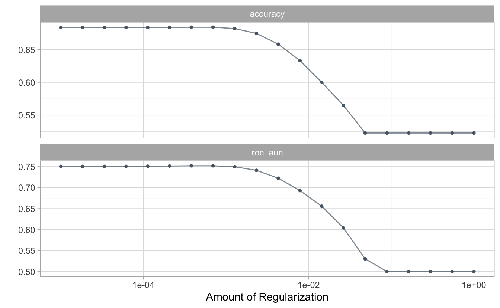

C Baseline linear classifier
In Chapters 8, 9, and 10 we demonstrate in detail how to train and evaluate different kinds of deep learning classifiers for the Kickstarter data set of campaign blurbs and whether each campaign was successful or not. This Appendix shows a baseline linear classification model for this data set using machine learning techniques like those used in Chapters 6 and 7. It serves the purpose of comparison with the deep learning techniques, and also as a succinct summary of a basic supervised machine learning analysis for text.
This machine learning analysis is presented with only minimal narrative; see Chapters 6 and 7 for more explanation and details.
C.1 Read in the data
library(tidyverse)
kickstarter <- read_csv("data/kickstarter.csv.gz") %>%
mutate(state = as.factor(state))
kickstarter#> # A tibble: 269,790 x 3
#> blurb state created_at
#> <chr> <fct> <date>
#> 1 Exploring paint and its place in a digital world. 0 2015-03-17
#> 2 Mike Fassio wants a side-by-side photo of me and Hazel eati… 0 2014-07-11
#> 3 I need your help to get a nice graphics tablet and Photosho… 0 2014-07-30
#> 4 I want to create a Nature Photograph Series of photos of wi… 0 2015-05-08
#> 5 I want to bring colour to the world in my own artistic skil… 0 2015-02-01
#> 6 We start from some lovely pictures made by us and we decide… 0 2015-11-18
#> 7 Help me raise money to get a drawing tablet 0 2015-04-03
#> 8 I would like to share my art with the world and to do that … 0 2014-10-15
#> 9 Post Card don’t set out to simply decorate stories. Our goa… 0 2015-06-25
#> 10 My name is Siu Lon Liu and I am an illustrator seeking fund… 0 2014-07-19
#> # … with 269,780 more rowsC.2 Split into test/train and create resampling folds
library(tidymodels)
set.seed(1234)
kickstarter_split <- kickstarter %>%
filter(nchar(blurb) >= 15) %>%
initial_split()
kickstarter_train <- training(kickstarter_split)
kickstarter_test <- testing(kickstarter_split)
set.seed(123)
kickstarter_folds <- vfold_cv(kickstarter_train)
kickstarter_folds#> # 10-fold cross-validation
#> # A tibble: 10 x 2
#> splits id
#> <list> <chr>
#> 1 <split [181883/20210]> Fold01
#> 2 <split [181883/20210]> Fold02
#> 3 <split [181883/20210]> Fold03
#> 4 <split [181884/20209]> Fold04
#> 5 <split [181884/20209]> Fold05
#> 6 <split [181884/20209]> Fold06
#> 7 <split [181884/20209]> Fold07
#> 8 <split [181884/20209]> Fold08
#> 9 <split [181884/20209]> Fold09
#> 10 <split [181884/20209]> Fold10C.3 Recipe for data preprocessing
library(textrecipes)
kickstarter_rec <- recipe(state ~ blurb, data = kickstarter_train) %>%
step_tokenize(blurb) %>%
step_tokenfilter(blurb, max_tokens = 5e3) %>%
step_tfidf(blurb)
kickstarter_rec#> Data Recipe
#>
#> Inputs:
#>
#> role #variables
#> outcome 1
#> predictor 1
#>
#> Operations:
#>
#> Tokenization for blurb
#> Text filtering for blurb
#> Term frequency-inverse document frequency with blurbC.4 Lasso regularized classification model
lasso_spec <- logistic_reg(penalty = tune(), mixture = 1) %>%
set_mode("classification") %>%
set_engine("glmnet")
lasso_spec#> Logistic Regression Model Specification (classification)
#>
#> Main Arguments:
#> penalty = tune()
#> mixture = 1
#>
#> Computational engine: glmnetC.5 A model workflow
We need a few more components before we can tune our workflow. Let’s use a sparse data encoding (Section 7.5).
library(hardhat)
sparse_bp <- default_recipe_blueprint(composition = "dgCMatrix")Let’s create a grid of possible regularization penalties to try.
lambda_grid <- grid_regular(penalty(range = c(-5, 0)), levels = 20)
lambda_grid#> # A tibble: 20 x 1
#> penalty
#> <dbl>
#> 1 0.00001
#> 2 0.0000183
#> 3 0.0000336
#> 4 0.0000616
#> 5 0.000113
#> 6 0.000207
#> 7 0.000379
#> 8 0.000695
#> 9 0.00127
#> 10 0.00234
#> 11 0.00428
#> 12 0.00785
#> 13 0.0144
#> 14 0.0264
#> 15 0.0483
#> 16 0.0886
#> 17 0.162
#> 18 0.298
#> 19 0.546
#> 20 1Now these can be combined in a tuneable workflow().
kickstarter_wf <- workflow() %>%
add_recipe(kickstarter_rec, blueprint = sparse_bp) %>%
add_model(lasso_spec)
kickstarter_wf#> ══ Workflow ════════════════════════════════════════════════════════════════════
#> Preprocessor: Recipe
#> Model: logistic_reg()
#>
#> ── Preprocessor ────────────────────────────────────────────────────────────────
#> 3 Recipe Steps
#>
#> ● step_tokenize()
#> ● step_tokenfilter()
#> ● step_tfidf()
#>
#> ── Model ───────────────────────────────────────────────────────────────────────
#> Logistic Regression Model Specification (classification)
#>
#> Main Arguments:
#> penalty = tune()
#> mixture = 1
#>
#> Computational engine: glmnetC.6 Tune the workflow
set.seed(2020)
lasso_rs <- tune_grid(
kickstarter_wf,
kickstarter_folds,
grid = lambda_grid
)
lasso_rs#> # Tuning results
#> # 10-fold cross-validation
#> # A tibble: 10 x 4
#> splits id .metrics .notes
#> <list> <chr> <list> <list>
#> 1 <split [181883/20210]> Fold01 <tibble [40 × 5]> <tibble [0 × 1]>
#> 2 <split [181883/20210]> Fold02 <tibble [40 × 5]> <tibble [0 × 1]>
#> 3 <split [181883/20210]> Fold03 <tibble [40 × 5]> <tibble [0 × 1]>
#> 4 <split [181884/20209]> Fold04 <tibble [40 × 5]> <tibble [0 × 1]>
#> 5 <split [181884/20209]> Fold05 <tibble [40 × 5]> <tibble [0 × 1]>
#> 6 <split [181884/20209]> Fold06 <tibble [40 × 5]> <tibble [0 × 1]>
#> 7 <split [181884/20209]> Fold07 <tibble [40 × 5]> <tibble [0 × 1]>
#> 8 <split [181884/20209]> Fold08 <tibble [40 × 5]> <tibble [0 × 1]>
#> 9 <split [181884/20209]> Fold09 <tibble [40 × 5]> <tibble [0 × 1]>
#> 10 <split [181884/20209]> Fold10 <tibble [40 × 5]> <tibble [0 × 1]>What are the best models?
show_best(lasso_rs, "roc_auc")#> # A tibble: 5 x 7
#> penalty .metric .estimator mean n std_err .config
#> <dbl> <chr> <chr> <dbl> <int> <dbl> <chr>
#> 1 0.000695 roc_auc binary 0.752 10 0.000856 Preprocessor1_Model08
#> 2 0.000379 roc_auc binary 0.752 10 0.000889 Preprocessor1_Model07
#> 3 0.000207 roc_auc binary 0.751 10 0.000903 Preprocessor1_Model06
#> 4 0.000113 roc_auc binary 0.751 10 0.000914 Preprocessor1_Model05
#> 5 0.0000616 roc_auc binary 0.751 10 0.000920 Preprocessor1_Model04show_best(lasso_rs, "accuracy")#> # A tibble: 5 x 7
#> penalty .metric .estimator mean n std_err .config
#> <dbl> <chr> <chr> <dbl> <int> <dbl> <chr>
#> 1 0.000379 accuracy binary 0.684 10 0.000764 Preprocessor1_Model07
#> 2 0.000695 accuracy binary 0.684 10 0.000732 Preprocessor1_Model08
#> 3 0.000207 accuracy binary 0.684 10 0.000905 Preprocessor1_Model06
#> 4 0.0000616 accuracy binary 0.684 10 0.000909 Preprocessor1_Model04
#> 5 0.000113 accuracy binary 0.684 10 0.000879 Preprocessor1_Model05autoplot(lasso_rs)